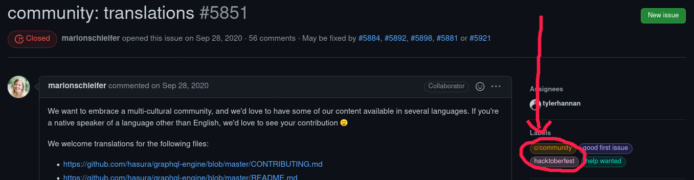
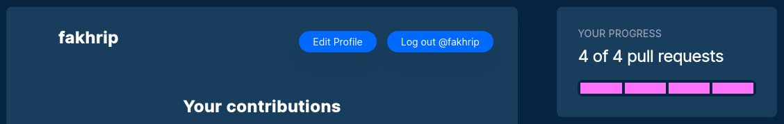
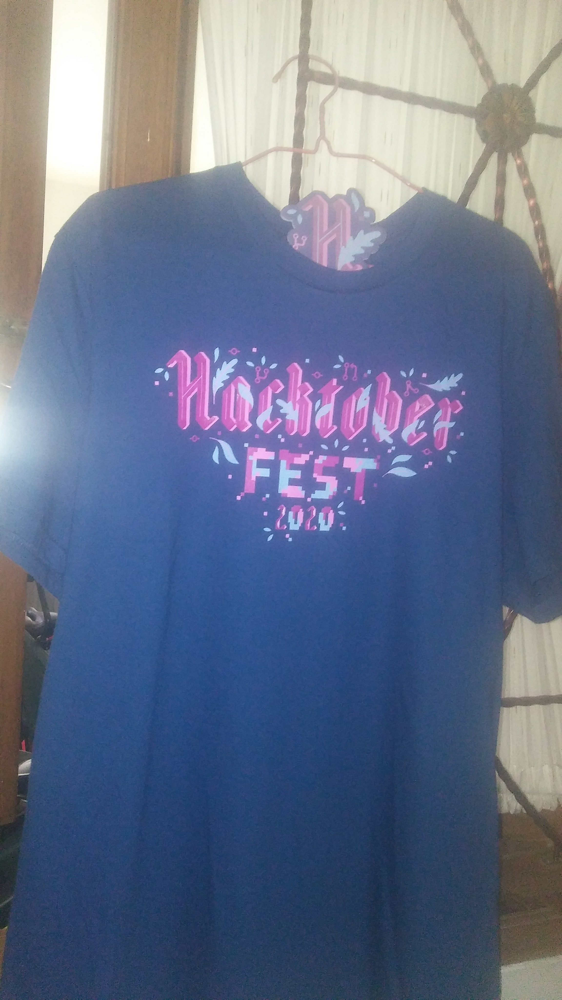
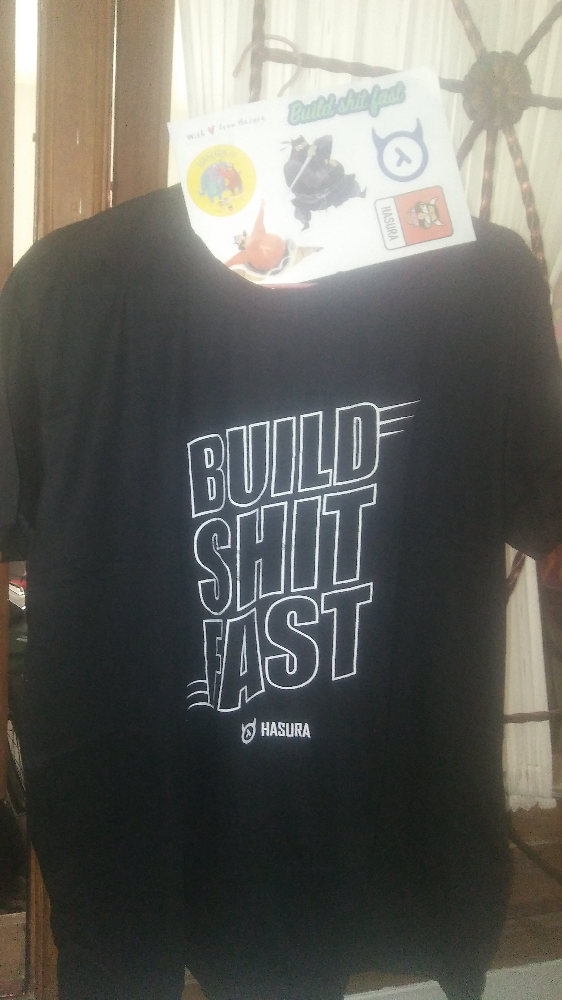
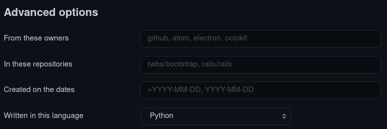
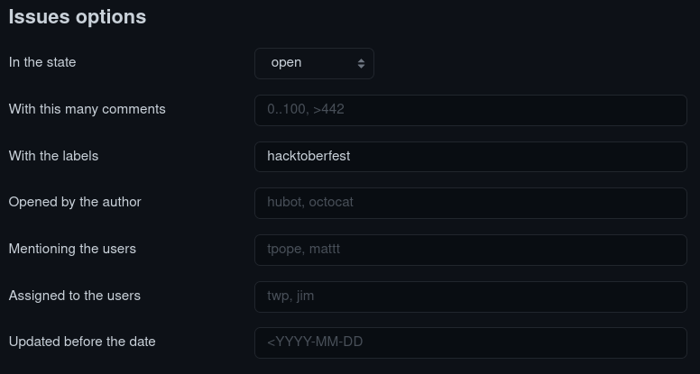

Hacktoberfest
Mungkin sebagian dari kalian akan bertanya-tanya, "What the hack is hacktoberfest ?", ya memang terdengar membingungkan bagi orang orang yang baru saja mendengar kata ini, jadi secara sederhananya, hacktoberfest merupakan sebuah event yang diadakan pada bulan oktober di tiap tahunnya oleh DigitalOcean.
Hacktoberfest sendiri merupakan event dimana seluruh opensource projects yang ingin meminta bantuan akan membuat sebuah issue pada repository github mereka, dan diberikan label hacktoberfest seperti berikut contohnya.

Lalu kita para programmer berhati mulia :v, akan membantu mereka dengan menyelesaikan permasalahan yang mereka beritahu pada issue yang dibuat, setelah berhasil kita fix masalahnya maka kita harus membuat pull request yang nantinya akan mereka review, dan jika berhasil di approve maka code yang sudah kalian buat akan di merge kedalam repository mereka.
Jika terdapat banyak keyword yang tidak dipahami, silahkan baca baca lagi ditempat lainnya ya, saya lagi tidak mood menjelaskan panjang dan detail wkwk XD.
Ngapain cape cape bantu orang ?
Loh, anda ini tidak memikirkan orang lain ya ? wkwk.
Jadi dengan kita membantu dan berkontribusi kepada opensource projects ini, kita bisa mendapatkan pahala tentunya, selain itu juga memang enak bukan disaat kita bisa membantu yang lainnya.
Fakta bahwa para programmer, coder, hacker atau apapun itu yang berhubungan ketat dengan komputer sangat cenderung mempelajari sesuatu hal dari komunitas / freebies places, maka berkontribusi kepada opensource projects ini juga merupakan sebuah timbal balik yang bisa kita lakukan atas kebaikan komunitas komunitas yang sudah memberi kita knowledge yang berlimpah (apalagi indian youtubers XD).
Dan juga selain itu....
Kita bisa mendapatkan swag lohhh (yeah, you see it correctly).

Dengan cara membuat 4 pull request (dan di approve hingga di merge) dalam jangka waktu 1 bulan tersebut, kita akan diberikan swag langsung dari DigitalOcean.

Dan alhamdulillah berkat rahmat Allah SWT, target saya untuk tahun 2020 tercapai yaitu bisa berkontribusi kepada opensource projects sekaligus mengikuti hacktoberfest pada tahun 2020 itu.
Berikut swag yang saya dapatkan selama event hacktoberfest ini, saya dapet 2 karena satunya lagi dari Hasura, karena mereka juga akan memberikan swag untuk yang bisa membantu mereka dengan membuat pull request hingga di approve selama event hacktoberfest saat itu.
 
Wah menarik euyy, gimana caranya ?
Oke saya kasih tips and tricks nya untuk mempermudah para pemula untuk bisa berkontribusi kepada opensource projects, membuat pull request, hingga mendapatkan swag seperti saya.
Sebelumnya, ada sangat banyak sekali resource diluar sana untuk membantu dalam sisi technicality nya (cara penggunaan git dan github nya), maka karena itu sangking bosennya saya liat blog orang jelasin itu lagi itu lagi, disini saya cuman bakal bahas tentang tips and tricks nya yang simple saja.
Pertama kalian masuk ke link berikut ini.
https://github.com/search/advanced
Setelah itu pada bagian Advanced options kalian pilih bahasa yang menurut kalian mudah / sudah dikuasai, agar lebih mudah nanti untuk membantu menyelesaikan masalah pada issue terkaitnya.
Lalu setelah itu, pada bagian Issues options kalian pilih open pada opsi in the state, dan dengan label hacktoberfest.
Contoh nya seperti berikut:


Lalu tinggal search aja, dan cari issue yang menurut kalian mudah untuk di fix, selanjutnya, just fix the problem and open a pull request 👌.
Dengan begitu saya ucapkan, selamat berkontribusi, have fun with your code, dan semoga beruntung.

Last word
Semoga artikel nya mudah dipahami dan menyenangkan, jika memang dirasa bermanfaat silahkan sebarkan kepada yang lainnya agar ilmu nya tidak berhenti disini saja.
Terimakasih kepada Allah SWT dan juga para pembaca disini, semua yang buruk datangnya dari saya dan yang baik hanya datang dari-Nya, mohon maaf bila ada kesalahan 🙏.